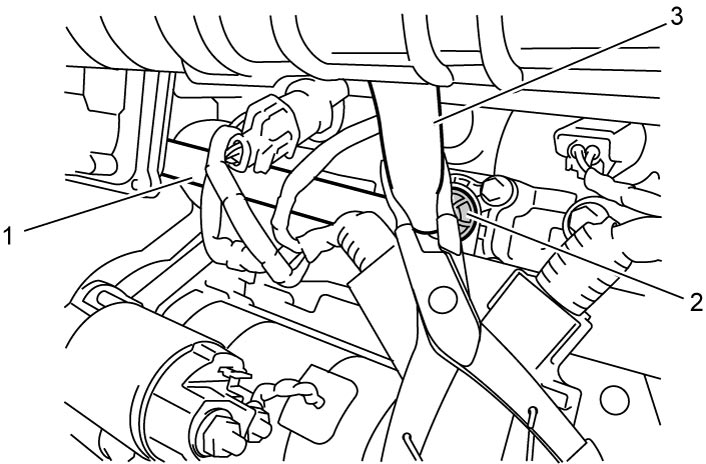

1B
| PCV Valve On-Vehicle Inspection |
1)Remove engine cover, if necessary. 
2)Put a hose (1) passing through upper water inlet pipe as shown in figure and touch the hose end to PCV valve (2).
NOTE:
A hose with outside diameter of about 16 mm (0.63 in.) and length of about 1.5 m (4.9 ft.) may facilitate retaining it on PCV and hearing sound by ear.
3)Run engine at idle speed.
4)While putting the hose end to ear, close and open PCV hose (3) by gripping lightly and releasing it with tool such as pliers, and check that snap sounds (seating sounds of inside valve) which assure PCV valve function are heard. If the sounds are not heard, remove PCV valve for inspection referring to PCV Valve Inspection:K14C.


 "Expand image")